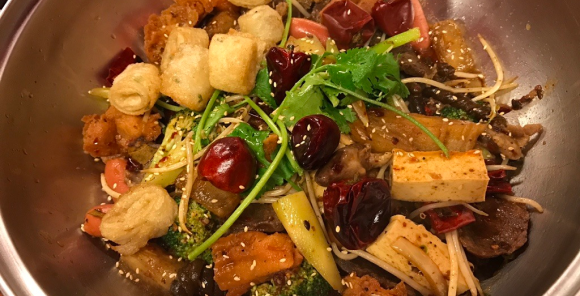

其他類
王記好吃雞肉
營業時間：07:00-12:00公 休 日：週日
電 話：(06)200-6959
地 址：704台南市北區開元路111號
1.5小時就秒殺完售的雞肉便當！有白斬跟煙燻兩種雞肉
👉煙燻/白斬/綜合雞肉便當$65 👉雞腿便當$85
便當類都是任選三樣配菜，沒有預定的人就要現場排隊，賣完為止，
10點前就會看到得滿滿的排隊人潮都是在買便當
不想等的人可以買雞肉盒~👉半隻$210一隻$400
不想排隊又想吃便當的人，也是可以提前幾天打電話去預定哦~
👉煙燻/白斬/綜合雞肉便當$65 👉雞腿便當$85
便當類都是任選三樣配菜，沒有預定的人就要現場排隊，賣完為止，
10點前就會看到得滿滿的排隊人潮都是在買便當
不想等的人可以買雞肉盒~👉半隻$210一隻$400
不想排隊又想吃便當的人，也是可以提前幾天打電話去預定哦~
他們家的雞肉單吃不用沾醬，
煙燻的味道已經頗重，肥彈的外皮，透著特有的香氣，搭配上不會過柴的肉質，讓人超滿意的一口接著一口，沾上椒鹽的話覺得會偏鹹，搭配油膏則會多了一個柔滑的醬汁感，以及甜甜的滋味
白斬雞吃起來也不錯，口感彈嫩帶著鹹香，也是單吃鹹味就很夠
煙燻的味道已經頗重，肥彈的外皮，透著特有的香氣，搭配上不會過柴的肉質，讓人超滿意的一口接著一口，沾上椒鹽的話覺得會偏鹹，搭配油膏則會多了一個柔滑的醬汁感，以及甜甜的滋味
白斬雞吃起來也不錯，口感彈嫩帶著鹹香，也是單吃鹹味就很夠

好可口烤鴨
營業時間：10:30-13:00 / 15:00-18:00公 休 日：週一
電 話：(06)289-9716
地 址：701台南市東區大同路二段435-2號
原本電話就很難打進去了，被台南點介紹後又更難訂了
想當年2017波波吃的時候前一天或當天訂都還吃得到...
👉切片+炒骨 半隻$240一隻$460 / 👉切片+鹹酥 半隻$250一隻$470
👉加餅皮一份$20
油亮又多汁的片鴨，沾點甜麵醬，一起被包在餅皮裡大口吃下，波波邊打字邊流口水~
想當年2017波波吃的時候前一天或當天訂都還吃得到...
👉切片+炒骨 半隻$240一隻$460 / 👉切片+鹹酥 半隻$250一隻$470
👉加餅皮一份$20
油亮又多汁的片鴨，沾點甜麵醬，一起被包在餅皮裡大口吃下，波波邊打字邊流口水~
別家吃不到的鹹酥鴨架子，香酥脆口，算是好可口的一大特色，
但波波熱愛炒骨，鹹酥只有吃過一次嘗鮮而已，
炒骨還會附上一些些高麗菜，
再去香香小吃外帶燙青菜回來一起配，就是個100分的一餐！
但波波熱愛炒骨，鹹酥只有吃過一次嘗鮮而已，
炒骨還會附上一些些高麗菜，
再去香香小吃外帶燙青菜回來一起配，就是個100分的一餐！
walking su
營業時間：17:30-22:00公 休 日：週日
電 話：0929-258-685
地 址：701台南市東區東平路260號
只要天氣變冷漸漸入冬時，Walking su藥膳麻油雞都是大客滿+排隊，
他們家的麻油雞湯，喝起來溫順不燥熱，而且以無限次免費加湯聞名
👉麻油雞湯$100
👉麻油雞湯+麵線或米血或冬粉$120
👉無肉麻油雞湯+麵線或米血或冬粉$60
👉麻油糯米雞飯$40
他們家的麻油雞湯，喝起來溫順不燥熱，而且以無限次免費加湯聞名
👉麻油雞湯$100
👉麻油雞湯+麵線或米血或冬粉$120
👉無肉麻油雞湯+麵線或米血或冬粉$60
👉麻油糯米雞飯$40
湯頭有大量的高麗菜一起熬煮，所以湯頭除了有麻油的香氣更增添幾分甜味，自取餐具區也有醬料可以裝來沾肉或菜一起吃呦~
內用的座位很多翻桌率也算快，即使人潮眾多店員都還是會一直呼喊哪位帥哥美女要加湯XD老闆跟店員的衣服都有印上加湯800次的字樣，十分逗趣
內用的座位很多翻桌率也算快，即使人潮眾多店員都還是會一直呼喊哪位帥哥美女要加湯XD老闆跟店員的衣服都有印上加湯800次的字樣，十分逗趣
玩食燒
營業時間：17:30-24:00公 休 日：週一
電 話：(06)208-0625
地 址：701台南市東區莊敬路116巷14號
玩食燒鄰近國賓影城、南紡夢時代、享溫馨KTV、一心保齡球館，
波波幾乎每次看完電影都會來玩食燒吃飯！
波波必點👉起司牛奶馬鈴薯$60 👉剝皮辣椒牛肉捲$50
用來裝起司的馬鈴薯碗跟蓋子都是可以吃的！炸的焦焦內裡軟綿的馬鈴薯沾上一大坨的牽絲起司，滿懷罪惡卻心懷感激地吃完
剝皮辣椒的鹹辣跟牛肉片的油配合的天衣無縫，不太吃辣的人也推薦
波波幾乎每次看完電影都會來玩食燒吃飯！
波波必點👉起司牛奶馬鈴薯$60 👉剝皮辣椒牛肉捲$50
用來裝起司的馬鈴薯碗跟蓋子都是可以吃的！炸的焦焦內裡軟綿的馬鈴薯沾上一大坨的牽絲起司，滿懷罪惡卻心懷感激地吃完
剝皮辣椒的鹹辣跟牛肉片的油配合的天衣無縫，不太吃辣的人也推薦
玩食燒有很多種類的燒烤可以選擇，是成大學生晚餐消夜的愛店，
玩食燒幾乎都有推出打卡好禮的活動，不會逼大家用五星評價來換禮物，只要打卡就好~
另外要特別提的是內用白飯吃到飽之外，蔥花柴魚片跟日式醬汁也是隨你加！沒吃上兩碗柴魚飯可別說你來過呦~
玩食燒幾乎都有推出打卡好禮的活動，不會逼大家用五星評價來換禮物，只要打卡就好~
另外要特別提的是內用白飯吃到飽之外，蔥花柴魚片跟日式醬汁也是隨你加！沒吃上兩碗柴魚飯可別說你來過呦~

公 休 日：X
電 話：(06)290-6788
地 址：701台南市東區中華東路三段34號
福相
營業時間：16:30-24:00公 休 日：X
電 話：(06)290-6788
地 址：701台南市東區中華東路三段34號
乾吃的麻辣鍋香氣更勝湯的！菜肉麵配料都在櫃台旁展示，想吃什麼自己夾進鍋子裡，店家推薦肉類和蔬菜3:7是黃金比例，一個人打卡每鍋就會送一份王子麵，店內白飯也是吃到飽，所以波波從來沒點過麵食
波波愛點👉老皮嫩肉👉雞軟骨👉蓮藕片👉水蓮或娃娃菜👉杏孢菇👉蔥油餅👉芋仔粿
還有一間店在公園南路上，離火車站比較近，但中華店較寬敞舒適
波波愛點👉老皮嫩肉👉雞軟骨👉蓮藕片👉水蓮或娃娃菜👉杏孢菇👉蔥油餅👉芋仔粿
還有一間店在公園南路上，離火車站比較近，但中華店較寬敞舒適
四川引進的乾鍋技術，辣味有分七顆星，總共8種辣度，最低是0.5顆星的點點辣（真的真的完全不敢吃辣的捧油可以跟店家說要最不辣的點點辣）
福相也會幫挑戰七顆星的客人拍照，並將照片貼在店內勇者牆上XD
波波蠻愛吃辣的但也只挑戰過兩顆星~
福相也會幫挑戰七顆星的客人拍照，並將照片貼在店內勇者牆上XD
波波蠻愛吃辣的但也只挑戰過兩顆星~

小赤佬干鍋
營業時間：17:00-24:00公 休 日：X
電 話：X
地 址：700台南市中西區忠義路二段139號
跟福相一樣主打乾式麻辣鍋，但小赤佬偏向個人鍋XD
本來在成大育樂街口有一間店，因為租約到期收了，只剩忠義店跟新興店，波波只有在育樂店吃過~
一下課就來排隊點餐，再去附近買一杯飲料解辣用，上樓選位子等餐來
內用座位少，但排隊人潮眾多，等個一下下食物跟位子會一起有的XD
波波愛點👉雞米花👉大腸頭👉大扁片👉娃娃菜或四季豆👉川丸子
本來在成大育樂街口有一間店，因為租約到期收了，只剩忠義店跟新興店，波波只有在育樂店吃過~
一下課就來排隊點餐，再去附近買一杯飲料解辣用，上樓選位子等餐來
內用座位少，但排隊人潮眾多，等個一下下食物跟位子會一起有的XD
波波愛點👉雞米花👉大腸頭👉大扁片👉娃娃菜或四季豆👉川丸子
但因為只有兩個鍋子在炒，所以前一個人選擇的辣度都會影響到下一個人，
所以每次點的辣度也會不同，也有機會點無辣但還是有點辣哦
每天只會有一鍋白飯，賣完就沒了，
因為其他麵類都要$15up，所以一份$10的白飯相對較夯
所以每次點的辣度也會不同，也有機會點無辣但還是有點辣哦
每天只會有一鍋白飯，賣完就沒了，
因為其他麵類都要$15up，所以一份$10的白飯相對較夯